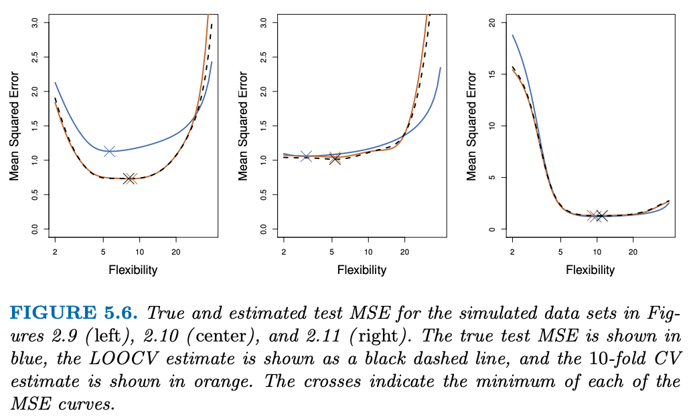

Resampling methods are an indispensable tool in modern statistics. They involve repeatedly drawing samples from a training set and refitting a model of interest on each sample in order to obtain additional information about the fitted model. For example, in order to estimate the variability of a linear regression fit, we can repeatedly draw different samples from the training data, fit a linear regression to each new sample, and then examine the extent to which the resulting fits differ. Such an approach may allow us to obtain information that would not be available from fitting the model only once using the original training sample.
In this chapter, we discuss two of the most commonly used resampling methods, cross-validation and the bootstrap. Both methods are important tools in the practical application of many statistical learning procedures. For example, cross-validation can be used to estimate the test error associated with a given statistical learning method in order to evaluate its performance, or to select the appropriate level of flexibility. The process of evaluating a model’s performance is known as model assessment, whereas the process of selecting the proper level of flexibility for a model is known as model selection. The bootstrap is used in several contexts, most commonly to provide a measure of accuracy of a parameter estimate or of a given statistical learning method.
15.1.1 Cross-validation
Given a data set, the use of a particular statistical learning method is warranted if it results in a low test error. The test error can be easily calculated if a designated test set is available. Unfortunately, this is usually not the case. The training error rate can easily be found, but it dramatically underestimates the test error rate.
In the absence of a very large designated test set that can be used to directly estimate the test error rate, a number of techniques can be used to estimate this quantity using the available training data. Some methods make a mathematical adjustment to the training error rate in order to estimate the test error rate. These are discussed in later chapters. In this section, we instead consider a class of methods that estimate the test error rate by holding out a subset of the training observations from the fitting process, and then applying the statistical learning method to those held out observations.
The validation set approach
The validation set approach is conceptually simple and is easy to imple- ment. But it has two potential drawbacks:
As is shown in the right-hand panel of Figure 5.2, the validation estimate of the test error rate can be highly variable, depending on precisely which observations are included in the training set and which observations are included in the validation set.
In the validation approach, only a subset of the observations – those that are included in the training set rather than in the validation set – are used to fit the model. Since statistical methods tend to perform worse when trained on fewer observations, this suggests that the validation set error rate may tend to overestimate the test error rate for the model fit on the entire data set.
In the coming subsections, we will present cross-validation, a refinement of the validation set approach that addresses these two issues.
Leave-one-out-cross-validation
The LOOCV estimate for the test MSE is the average of these \(n\) test error estimates:
LOOCV has a couple of major advantages over the validation set approach.
First, it has far less bias. In LOOCV, we repeatedly fit the statistical learning method using training sets that contain \(n − 1\) observations, almost as many as are in the entire data set. This is in contrast to the validation set approach, in which the training set is typically around half the size of the original data set. Consequently, the LOOCV approach tends not to overestimate the test error rate as much as the validation set approach does.
Second, in contrast to the validation approach which will yield different results when applied repeatedly due to randomness in the training/validation set splits, performing LOOCV multiple times will always yield the same results: there is no randomness in the training/validation set splits.
LOOCV has the potential to be expensive to implement, since the model has to be fit \(n\) times. This can be very time consuming if \(n\) is large, and if each individual model is slow to fit. With least squares linear or polynomial regression, an amazing shortcut makes the cost of LOOCV the same as that of a single model fit! The following formula holds:
where \(\hat{y}_i\) is the \(i\)th fitted value from the original least squares fit, and \(h_i\) is the leverage defined Equation 13.1. This is like the ordinary MSE, except the \(i\)th residual is divided by \(1 − h_i\). The leverage lies between \(1/n\) and 1, and reflects the amount that an observation influences its own fit. Hence the residuals for high-leverage points are inflated in this formula by exactly the right amount for this equality to hold.
LOOCV is a very general method, and can be used with any kind of predictive modeling.
\(k\)-fold cross-validation
The k-fold CV estimate is computed by averaging these values,
It is not hard to see that LOOCV is a special case of \(k\)-fold CV in which \(k\) is set to equal \(n\). In practice, one typically performs \(k\)-fold CV using \(k = 5\) or \(k = 10\). The obvious advantage of using \(k = 5\) or \(k = 10\) rather than \(k = n\) is the computational benefits? And cross-validation is a very general approach that can be applied to almost any statistical learning method. The next section describes the non-computational benefits that exist as well.
When we examine real data, we do not know the true test MSE, and so it is difficult to determine the accuracy of the cross-validation estimate. However, if we examine simulated data, then we can compute the true test MSE, and can thereby evaluate the accuracy of our cross-validation results.

In all three plots, the two cross-validation estimates are very similar.
When we perform cross-validation, our goal might be to determine how well a given statistical learning procedure can be expected to perform on independent data; in this case, the actual estimate of the test MSE is of interest. But at other times we are interested only in the location of the minimum point in the estimated test MSE curve. This is because we might be performing cross-validation on a number of statistical learning methods, or on a single method using different levels of flexibility, in order to identify the method that results in the lowest test error. For this purpose, the location of the minimum point in the estimated test MSE curve is important, but the actual value of the estimated test MSE is not. We find in Figure 5.6 that despite the fact that they sometimes underestimate the true test MSE, all of the CV curves come close to identifying the correct level of flexibility – that is, the flexibility level corresponding to the smallest test MSE.
Bias-variance trade-off for \(k\)-fold cross-validation
There is potentially more important advantage of \(k\)-fold CV is that it often gives more accurate estimates of the test error rate than does LOOCV. This has to do with a bias-variance trade-off.
It was mentioned earlier that the validation set approach can lead to overestimates of the test error rate, since in this approach the training set used to fit the statistical learning method contains only half the observations of the entire data set. Using this logic, it is not hard to see that LOOCV will give approximately unbiased estimates of the test error, since each training set contains \(n - 1\) observations, which is almost as many as the number of observations in the full data set. And performing \(k\)-fold CV for, say, \(k = 5\) or \(k = 10\) will lead to an intermediate level of bias, since each training set contains approximately \((k − 1)n/k\) observations – fewer than in the LOOCV approach, but substantially more than in the validation set approach. Therefore, from the perspective of bias reduction, it is clear that LOOCV is to be preferred to \(k\)-fold CV.
However, we know that bias is not the only source for concern in an estimating procedure; we must also consider the procedure’s variance. It turns out that LOOCV has higher variance than does \(k\)-fold CV with \(k < n\). Why is this the case? When we perform LOOCV, we are in effect averaging the outputs of \(n\) fitted models, each of which is trained on an almost identical set of observations; therefore, these outputs are highly (positively) correlated with each other. In contrast, when we perform \(k\)-fold CV with \(k < n\), we are averaging the outputs of \(k\) fitted models that are somewhat less correlated with each other, since the overlap between the training sets in each model is smaller. Since the mean of many highly correlated quantities has higher variance than does the mean of many quantities that are not as highly correlated, the test error estimate resulting from LOOCV tends to have higher variance than does the test error estimate resulting from \(k\)-fold CV.
To summarize, there is a bias-variance trade-off associated with the choice of \(k\) in \(k\)-fold cross-validation. Typically, given these considerations, one performs \(k\)-fold cross-validation using \(k = 5\) or \(k = 10\), as these values have been shown empirically to yield test error rate estimates that suffer neither from excessively high bias nor from very high variance.
Cross-validation on classification problems
Cross-validation can also be a very useful approach in the classification setting when \(Y\) is qualitative. For instance, in the classification setting, the LOOCV error rate takes the form (the k-fold CV error rate and validation set error rates are defined analogously):
As an example, we fit various logistic regression models. Since this is simulated data, we can compute the true test error rate, which takes a value of 0.201 and so is substantially larger than the Bayes error rate of 0.133. Clearly logistic regression does not have enough flexibility to model the Bayes decision boundary in this setting. We can easily extend logistic regression to obtain a non-linear decision boundary by using polynomial functions of the predictors, as we did in the regression setting. For example, we can fit a quadratic logistic regression model, given by
In practice, for real data, the Bayes decision boundary and the test er- ror rates are unknown. So how might we decide between the four logistic regression models displayed in Figure 5.7? We can use cross-validation in order to make this decision.
As we have seen previously, the training error tends to decrease as the flexibility of the fit increases. (The figure indicates that though the training error rate doesn’t quite decrease monotonically, it tends to decrease on the whole as the model complexity increases.) In contrast, the test error displays a characteristic U-shape. The 10-fold CV error rate provides a pretty good approximation to the test error rate. While it somewhat underestimates the error rate, it reaches a minimum when fourth-order polynomials are used, which is very close to the minimum of the test curve, which occurs when third-order polynomials are used. On the right, Again the training error rate declines as the method becomes more flexible, and so we see that the training error rate cannot be used to select the optimal value for \(K\). Though the cross-validation error curve slightly underestimates the test error rate, it takes on a minimum very close to the best value for \(K\).
15.1.2 The bootstrap
The bootstrap is a widely applicable and extremely powerful statistical tool that can be used to quantify the uncertainty associated with a given estimator or statistical learning method. As a simple example, the bootstrap can be used to estimate the standard errors of the coefficients from a linear regression fit. In the specific case of linear regression, this is not particularly useful, since we saw know that standard statistical software such as R outputs such standard errors automatically. However, the power of the bootstrap lies in the fact that it can be easily applied to a wide range of statistical learning methods, including some for which a measure of variability is otherwise difficult to obtain and is not automatically output by statistical software.
With simulated data, can generate new samples and estimate the sampling distribution of the statistic of interest very easily and get the standard error. In practice, however, the procedure for estimating \(SE( < \text{statistic} >)\) cannot be applied, because for real data we cannot generate new samples. However, the bootstrap approach allows us to use a computer to emulate the process of obtaining new sample sets, so that we can estimate the variability of our statistic without generating additional samples. Rather than repeatedly obtaining independent data sets from the population, we instead obtain distinct data sets by repeatedly sampling observations from the original data set.
Again, the boxplots have similar spreads, indicating that the bootstrap approach can be used to effectively estimate the variability associated with our statistic.
One of the great advantages of the bootstrap approach is that it can be applied in almost all situations. No complicated mathematical calculations are required.
15.2 Lab
NOTE: Will learn tidymodels after taking MAS I exam
15.2.1 The validation set approach
# load datadata_auto<-ISLR2::Auto# split into training and testingdata_split<-data_auto%>%rsample::initial_split(prop =.7)data_train<-data_split%>%rsample::training()data_test<-data_split%>%rsample::testing()# fit various degrees of polynomial modelsmods_lm<-c(1:4)%>%map(\(power)lm(mpg~poly(horsepower, power), data =data_train))# make predictionspreds_lm<-mods_lm%>%map(\(mod)predict(mod, newdata =data_test))# calculate msepreds_lm%>%map(\(preds)yardstick::rmse_vec(truth =data_test$mpg, estimate =preds)%>%raise_to_power(2))
The LOOCV estimate can be automatically computed for any generalized linear model using the glm() and boot::cv.glm() functions; and by default family = "gaussian", which means it does linear regression.
# fit modelmod_glm<-glm(mpg~horsepower, data =data_auto)# obtain LOOCV estimatecv_err<-boot::cv.glm(data_auto, mod_glm)
cv_err$delta gives two numbers: < first > = LOOCV estimate, < second > = bias-adjusted CV error estimate (for when using \(k < n\))
# extract results# -> two numbers are identical herecv_err$delta
[1] 24.23151 24.23114
# perform LOOCV for different polynomial models and obtain the CV error estimatesc(1:4)%>%map(function(power, df=data_auto){glm(mpg~poly(horsepower, power), data =df)%>%boot::cv.glm(df, .)%>%.$delta%>%.[1]})
The cv.glm() function can also be used to implement \(k\)-fold CV.
# perform k-fold CV for different polynomial models and obtain the CV error estimates# -> just have to specify K = kc(1:4)%>%map(function(power, df=data_auto){glm(mpg~poly(horsepower, power), data =df)%>%boot::cv.glm(df, ., K =10)%>%.$delta%>%.[1]})
Using basic statistical properties of the variance, as well as single-variable calculus, derive (5.6). In other words, prove that \(\alpha\) given by (5.6) does indeed minimize \(Var(\alpha X + (1 - \alpha)Y)\).
Question 2
We will now derive the probability that a given observation is part of a bootstrap sample. Suppose that we obtain a bootstrap sample from a set of n observations.
What is the probability that the first bootstrap observation is not the \(j\)th observation from the original sample? Justify your answer.
\[
1 - 1/n
\]
What is the probability that the second bootstrap observation is not the \(j\)th observation from the original sample?
\[
1 - 1/n
\]
Argue that the probability that the \(j\)th observation is not in the bootstrap sample is \((1 - 1/n)^n\).
\(n\) independent events -> Multliply the probabilities
When \(n = 5, 100, 10000\), what is the probability that the \(j\)th observation is in the bootstrap sample?
Create a plot that displays, for each integer value of \(n\) from 1 to 100, the probability that the \(j\)th observation is in the bootstrap sample. Comment on what you observe.
data.frame(n =c(1:100))%>%mutate(prob =boot_prob(n))%$%plot(x =n, y =prob, type ="o")
Approaches a limit.
We will now investigate numerically the probability that a bootstrap sample of size \(n = 100\) contains the \(j\)th observation. Here \(j = 4\). We repeatedly create bootstrap samples, and each time we record whether or not the fourth observation is contained in the bootstrap sample.
The probability of including \(4\) when resampling numbers \(1,...,100\) is close to \(1 - (1 - 1/100)^{100}\).
Question 3
We now review \(k\)-fold cross-validation.
Explain how \(k\)-fold cross-validation is implemented.
Steps:
Data is randomply split into \(k\) subsections, called folds.
Model is fit on all but 1 of the subsections, and is used to predict data in the remaining section.
Final error estimate is averaged across all models.
What are the advantages and disadvantages of \(k\)-fold cross-validation relative to:
The validation set approach?
LOOCV?
\(k\)-fold is way less biased because more data is used to fit the model (overestimates test error rate relative to using the entire dataset to fit the model); does not depend on the split as heavily as the validation approach
\(k\)-fold is computationally easier and final results (error estimates) are less variable (won’t get as big of difference if fit on different set of data)
Question 4
Suppose that we use some statistical learning method to make a prediction for the response \(Y\) for a particular value of the predictor \(X\). Carefully describe how we might estimate the standard deviation of our prediction.
Create 10,000 bootstrap samples
Fit the same model on each bootstrap sample
Predict the new observation using each model.
Calculate standard deviation of predictions
15.3.2 Applied
!!! TO BE DONE ONCE LEARN TIDYMODELS
Question 5
Question 6
Question 7
Question 8
Question 9
Source Code
# ISLR -- Resampling methods```{r}#| label: load-prereqs#| echo: false#| message: false# knitr optionssource("_common.R")```## Notes*Resampling methods* are an indispensable tool in modern statistics. They involve repeatedly drawing samples from a training set and refitting a model of interest on each sample in order to obtain additional information about the fitted model. For example, in order to estimate the variability of a linear regression fit, we can repeatedly draw different samples from the training data, fit a linear regression to each new sample, and then examine the extent to which the resulting fits differ. Such an approach may allow us to obtain information that would not be available from fitting the model only once using the original training sample.In this chapter, we discuss two of the most commonly used resampling methods, *cross-validation* and the *bootstrap.* Both methods are important tools in the practical application of many statistical learning procedures. For example, **cross-validation can be used to estimate the test error associated with a given statistical learning method in order to evaluate its performance, or to select the appropriate level of flexibility**. The process of evaluating a model's performance is known as *model assessment*, whereas the process of selecting the proper level of flexibility for a model is known as *model selection*. **The bootstrap is used in several contexts, most commonly to provide a measure of accuracy of a parameter estimate or of a given statistical learning method.**### Cross-validationGiven a data set, the use of a particular statistical learning method is warranted if it results in a low test error. The test error can be easily calculated if a designated test set is available. Unfortunately, this is usually not the case. The training error rate can easily be found, but it dramatically underestimates the test error rate.In the absence of a very large designated test set that can be used to directly estimate the test error rate, a number of techniques can be used to estimate this quantity using the available training data. Some methods make a mathematical adjustment to the training error rate in order to estimate the test error rate. These are discussed in later chapters. In this section, we instead consider a class of methods that estimate the test error rate by *holding out* a subset of the training observations from the fitting process, and then applying the statistical learning method to those held out observations.#### The validation set approach{width="50%"}{width="50%"}The validation set approach is conceptually simple and is easy to imple- ment. But it has two potential drawbacks:1. As is shown in the right-hand panel of Figure 5.2, the validation estimate of the test error rate can be highly variable, depending on precisely which observations are included in the training set and which observations are included in the validation set.2. In the validation approach, only a subset of the observations -- those that are included in the training set rather than in the validation set -- are used to fit the model. Since statistical methods tend to perform worse when trained on fewer observations, this suggests that **the validation set error rate may tend to *overestimate* the test error rate for the model fit on the entire data set**.In the coming subsections, we will present *cross-validation*, a refinement of the validation set approach that addresses these two issues.#### Leave-one-out-cross-validation{width="50%"}The LOOCV estimate for the test MSE is the average of these $n$ test error estimates:$$\text{CV}_{(n)} = \frac{1}{n} \sum_{i = 1}^n \text{MSE}_i$$LOOCV has a couple of major advantages over the validation set approach. - First, it has far less bias. In LOOCV, we repeatedly fit the statistical learning method using training sets that contain $n − 1$ observations, almost as many as are in the entire data set. This is in contrast to the validation set approach, in which the training set is typically around half the size of the original data set. Consequently, the LOOCV approach tends not to overestimate the test error rate as much as the validation set approach does. - Second, in contrast to the validation approach which will yield different results when applied repeatedly due to randomness in the training/validation set splits, performing LOOCV multiple times will always yield the same results: there is no randomness in the training/validation set splits.{width="50%"}LOOCV has the potential to be expensive to implement, since the model has to be fit $n$ times. This can be very time consuming if $n$ is large, and if each individual model is slow to fit. With least squares linear or polynomial regression, an amazing shortcut makes the cost of LOOCV the same as that of a single model fit! The following formula holds:$$\text{CV}_{(n)} = \frac{1}{n} \sum_{i = 1}^n \big(\frac{y_i - \hat{y}_i}{1 - h_i}\big)^2$$where $\hat{y}_i$ is the $i$th fitted value from the original least squares fit, and $h_i$ is the leverage defined @eq-leverage. This is like the ordinary MSE, except the $i$th residual is divided by $1 − h_i$. The leverage lies between $1/n$ and 1, and reflects the amount that an observation influences its own fit. Hence the residuals for high-leverage points are inflated in this formula by exactly the right amount for this equality to hold.LOOCV is a very general method, and can be used with any kind of predictive modeling.#### $k$-fold cross-validation{width="50%"}The k-fold CV estimate is computed by averaging these values,$$\text{CV}_{(k)} = \frac{1}{k} \sum_{i = 1}^k \text{MSE}_i$$It is not hard to see that LOOCV is a special case of $k$-fold CV in which $k$ is set to equal $n$. In practice, one typically performs $k$-fold CV using $k = 5$ or $k = 10$. The obvious advantage of using $k = 5$ or $k = 10$ rather than $k = n$ is the computational benefits? And cross-validation is a very general approach that can be applied to almost any statistical learning method. The next section describes the non-computational benefits that exist as well.When we examine real data, we do not know the *true* test MSE, and so it is difficult to determine the accuracy of the cross-validation estimate. However, if we examine simulated data, then we can compute the true test MSE, and can thereby evaluate the accuracy of our cross-validation results.{width="50%"}In all three plots, the two cross-validation estimates are very similar.When we perform cross-validation, our goal might be to determine how well a given statistical learning procedure can be expected to perform on independent data; in this case, the actual estimate of the test MSE is of interest. But at other times we are interested only in the location of the *minimum point in the estimated test MSE curve*. This is because we might be performing cross-validation on a number of statistical learning methods, or on a single method using different levels of flexibility, in order to identify the method that results in the lowest test error. For this purpose, the location of the minimum point in the estimated test MSE curve is important, but the actual value of the estimated test MSE is not. We find in Figure 5.6 that despite the fact that they sometimes underestimate the true test MSE, all of the CV curves come close to identifying the correct level of flexibility -- that is, the flexibility level corresponding to the smallest test MSE.#### Bias-variance trade-off for $k$-fold cross-validationThere is potentially more important advantage of $k$-fold CV is that it often gives more accurate estimates of the test error rate than does LOOCV. This has to do with a bias-variance trade-off.It was mentioned earlier that the validation set approach can lead to overestimates of the test error rate, since in this approach the training set used to fit the statistical learning method contains only half the observations of the entire data set. Using this logic, it is not hard to see that LOOCV will give approximately unbiased estimates of the test error, since each training set contains $n - 1$ observations, which is almost as many as the number of observations in the full data set. And performing $k$-fold CV for, say, $k = 5$ or $k = 10$ will lead to an intermediate level of bias, since each training set contains approximately $(k − 1)n/k$ observations -- fewer than in the LOOCV approach, but substantially more than in the validation set approach. Therefore, from the perspective of bias reduction, it is clear that LOOCV is to be preferred to $k$-fold CV.However, we know that bias is not the only source for concern in an estimating procedure; we must also consider the procedure’s variance. It turns out that LOOCV has higher variance than does $k$-fold CV with $k < n$. Why is this the case? When we perform LOOCV, we are in effect averaging the outputs of $n$ fitted models, each of which is trained on an almost identical set of observations; therefore, these outputs are highly (positively) correlated with each other. In contrast, when we perform $k$-fold CV with $k < n$, we are averaging the outputs of $k$ fitted models that are somewhat less correlated with each other, since the overlap between the training sets in each model is smaller. Since the mean of many highly correlated quantities has higher variance than does the mean of many quantities that are not as highly correlated, the test error estimate resulting from LOOCV tends to have higher variance than does the test error estimate resulting from $k$-fold CV.**To summarize, there is a bias-variance trade-off associated with the choice of $k$ in $k$-fold cross-validation. Typically, given these considerations, one performs $k$-fold cross-validation using $k = 5$ or $k = 10$, as these values have been shown empirically to yield test error rate estimates that suffer neither from excessively high bias nor from very high variance.**#### Cross-validation on classification problemsCross-validation can also be a very useful approach in the classification setting when $Y$ is qualitative. For instance, in the classification setting, the LOOCV error rate takes the form (the k-fold CV error rate and validation set error rates are defined analogously):$$\text{CV}_{(n)} = \frac{1}{n} \sum_{i = 1}^n I(y_i \ne \hat{y}_i)$$As an example, we fit various logistic regression models. Since this is simulated data, we can compute the *true* test error rate, which takes a value of 0.201 and so is substantially larger than the Bayes error rate of 0.133. Clearly logistic regression does not have enough flexibility to model the Bayes decision boundary in this setting. We can easily extend logistic regression to obtain a non-linear decision boundary by using polynomial functions of the predictors, as we did in the regression setting. For example, we can fit a *quadratic* logistic regression model, given by$$\log\big(\frac{p}{1 - p}\big) = \beta_0 + \beta_1 X_1 + \beta_2 X_1^2 + \beta_3 X_2 + \beta_4 X_2^2 $${width="50%"}In practice, for real data, the Bayes decision boundary and the test er- ror rates are unknown. So how might we decide between the four logistic regression models displayed in Figure 5.7? **We can use cross-validation in order to make this decision**.As we have seen previously, the training error tends to decrease as the flexibility of the fit increases. (The figure indicates that though the training error rate doesn’t quite decrease monotonically, it tends to decrease on the whole as the model complexity increases.) In contrast, the test error displays a characteristic U-shape. The 10-fold CV error rate provides a pretty good approximation to the test error rate. While it somewhat underestimates the error rate, it reaches a minimum when fourth-order polynomials are used, which is very close to the minimum of the test curve, which occurs when third-order polynomials are used. On the right, Again the training error rate declines as the method becomes more flexible, and so we see that the training error rate cannot be used to select the optimal value for $K$. Though the cross-validation error curve slightly underestimates the test error rate, it takes on a minimum very close to the best value for $K$.{width="50%"}### The bootstrap**The *bootstrap* is a widely applicable and extremely powerful statistical tool that can be used to quantify the uncertainty associated with a given estimator or statistical learning method**. As a simple example, the bootstrap can be used to estimate the standard errors of the coefficients from a linear regression fit. In the specific case of linear regression, this is not particularly useful, since we saw know that standard statistical software such as R outputs such standard errors automatically. However, the power of the bootstrap lies in the fact that it can be easily applied to a wide range of statistical learning methods, including some for which a measure of variability is otherwise difficult to obtain and is not automatically output by statistical software.With simulated data, can generate new samples and estimate the sampling distribution of the statistic of interest very easily and get the standard error. In practice, however, the procedure for estimating $SE( < \text{statistic} >)$ cannot be applied, because for real data we cannot generate new samples. However, the bootstrap approach allows us to use a computer to emulate the process of obtaining new sample sets, so that we can estimate the variability of our statistic without generating additional samples. Rather than repeatedly obtaining independent data sets from the population, we instead obtain distinct data sets by repeatedly sampling observations from the *original data set*.{width="50%"}{width="50%"}Again, the boxplots have similar spreads, indicating that the bootstrap approach can be used to effectively estimate the variability associated with our statistic.Bootstrap estimates:- Of location are biased- Of spread are fairly accurate- [Better description](https://coltongearhart.github.io/computational-methods/bootstrap.html)- One of the great advantages of the bootstrap approach is that it can be applied in almost all situations. No complicated mathematical calculations are required.## LabNOTE: Will learn `tidymodels` after taking MAS I exam### The validation set approach```{r}# load datadata_auto <- ISLR2::Auto# split into training and testingdata_split <- data_auto %>% rsample::initial_split(prop = .7)data_train <- data_split %>% rsample::training()data_test <- data_split %>% rsample::testing()# fit various degrees of polynomial modelsmods_lm <-c(1:4) %>%map(\(power) lm(mpg ~poly(horsepower, power), data = data_train))# make predictionspreds_lm <- mods_lm %>%map(\(mod) predict(mod, newdata = data_test))# calculate msepreds_lm %>%map(\(preds) yardstick::rmse_vec(truth = data_test$mpg, estimate = preds) %>%raise_to_power(2))```### Leave-one-out cross-validationThe LOOCV estimate can be automatically computed for any generalized linear model using the `glm()` and `boot::cv.glm()` functions; and by default `family = "gaussian"`, which means it does linear regression.```{r}# fit modelmod_glm <-glm(mpg ~ horsepower, data = data_auto)# obtain LOOCV estimatecv_err <- boot::cv.glm(data_auto, mod_glm)````cv_err$delta` gives two numbers: < first > = LOOCV estimate, < second > = bias-adjusted CV error estimate (for when using $k < n$)```{r}# extract results# -> two numbers are identical herecv_err$delta``````{r}# perform LOOCV for different polynomial models and obtain the CV error estimatesc(1:4) %>%map(function(power, df = data_auto) {glm(mpg ~poly(horsepower, power), data = df) %>% boot::cv.glm(df, .) %>% .$delta %>% .[1] }) ```### $k$-fold cross-validationThe `cv.glm()` function can also be used to implement $k$-fold CV.```{r}# perform k-fold CV for different polynomial models and obtain the CV error estimates# -> just have to specify K = kc(1:4) %>%map(function(power, df = data_auto) {glm(mpg ~poly(horsepower, power), data = df) %>% boot::cv.glm(df, ., K =10) %>% .$delta %>% .[1] }) ```### The bootstrap- Already created some examples [here](https://coltongearhart.github.io/computational-methods/bootstrap.html)## Exercises### Conceptual#### Question 1> Using basic statistical properties of the variance, as well as single-variable calculus, derive (5.6). In other words, prove that $\alpha$ given by (5.6) does indeed minimize $Var(\alpha X + (1 - \alpha)Y)$.#### Question 2> We will now derive the probability that a given observation is part of a bootstrap sample. Suppose that we obtain a bootstrap sample from a set of n observations.> a. What is the probability that the first bootstrap observation is *not* the $j$th observation from the original sample? Justify your answer.$$1 - 1/n$$> b. What is the probability that the second bootstrap observation is *not* the $j$th observation from the original sample?$$1 - 1/n$$> c. Argue that the probability that the $j$th observation is *not* in the bootstrap sample is $(1 - 1/n)^n$.$n$ independent events -> Multliply the probabilities> d. When $n = 5, 100, 10000$, what is the probability that the $j$th observation is in the bootstrap sample?$$1 - (1 - 1/n)^n$$```{r}boot_prob <-function(n) {1- (1-1/ n)^n}c(5, 100, 10000) %>%map(\(n) boot_prob(n))```> g. Create a plot that displays, for each integer value of $n$ from 1 to 100, the probability that the $j$th observation is in the bootstrap sample. Comment on what you observe.```{r}data.frame(n =c(1:100)) %>%mutate(prob =boot_prob(n)) %$%plot(x = n, y = prob, type ="o")```Approaches a limit.> h. We will now investigate numerically the probability that a bootstrap sample of size $n = 100$ contains the $j$th observation. Here $j = 4$. We repeatedly create bootstrap samples, and each time we record whether or not the fourth observation is contained in the bootstrap sample.```{r}store <-rep (NA, 10000)for (i in1:10000) { store[i] <-sum(sample(1:100, rep =TRUE) ==4) >0}mean(store)```> Comment on the results obtained.The probability of including $4$ when resampling numbers $1,...,100$ is close to$1 - (1 - 1/100)^{100}$.#### Question 3> 3. We now review $k$-fold cross-validation.> a. Explain how $k$-fold cross-validation is implemented.Steps:1. Data is randomply split into $k$ subsections, called folds.2. Model is fit on all but 1 of the subsections, and is used to predict data in the remaining section.3. Final error estimate is averaged across all models.> b. What are the advantages and disadvantages of $k$-fold cross-validation relative to: i. The validation set approach? ii. LOOCV?i. $k$-fold is way less biased because more data is used to fit the model (overestimates test error rate relative to using the entire dataset to fit the model); does not depend on the split as heavily as the validation approachii. $k$-fold is computationally easier and final results (error estimates) are less variable (won't get as big of difference if fit on different set of data)#### Question 4> Suppose that we use some statistical learning method to make a prediction for the response $Y$ for a particular value of the predictor $X$. Carefully describe how we might estimate the standard deviation of our prediction.1. Create 10,000 bootstrap samples2. Fit the same model on each bootstrap sample3. Predict the new observation using each model.4. Calculate standard deviation of predictions### Applied!!! TO BE DONE ONCE LEARN TIDYMODELS#### Question 5```{r}```#### Question 6```{r}```#### Question 7```{r}```#### Question 8```{r}```#### Question 9```{r}```